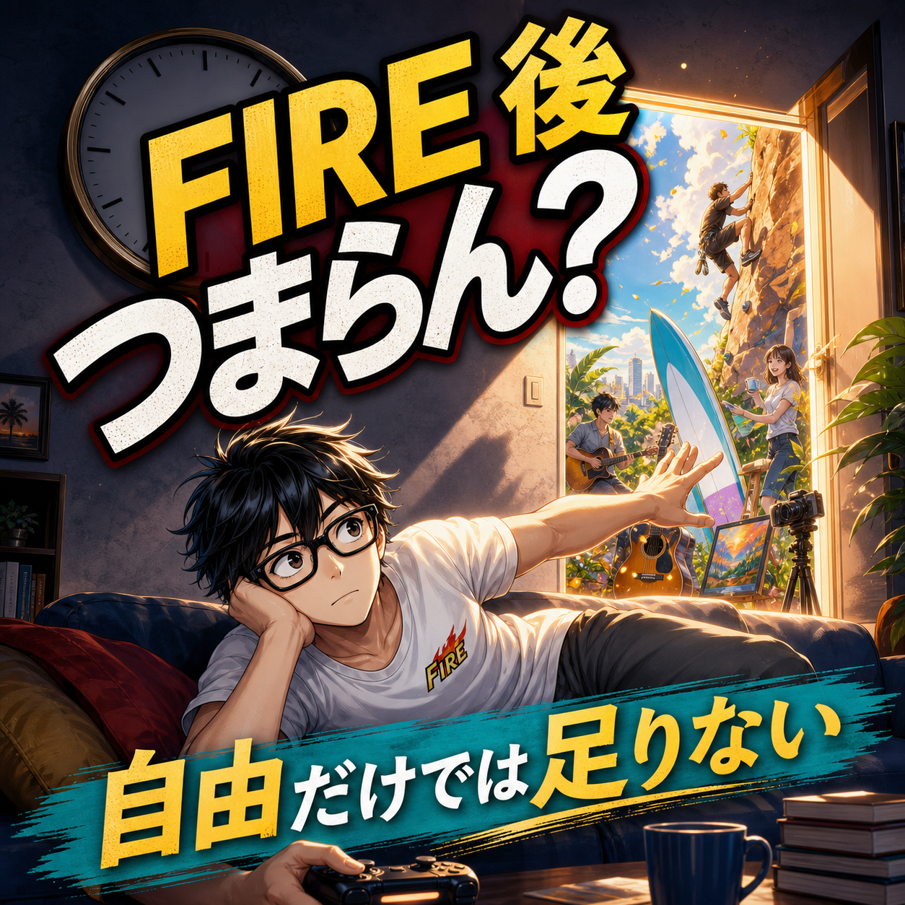

FIRE COLUMN
FIREするとつまらない？自由になっても満たされない理由

.png) RELATED ARTICLE
FIRE後の毎日がつまらないと感じたとき、僕が見直したこと
仕事をして、食事をして、寝る。翌日も同じことを繰り返す。「なんか人生がつまらない」と感じるとき、原因は大きな失敗ではなく、毎日が予測できすぎることかもしれません。
wakuwaku-fire-git.pages.dev ↗
RELATED ARTICLE
FIRE後の毎日がつまらないと感じたとき、僕が見直したこと
仕事をして、食事をして、寝る。翌日も同じことを繰り返す。「なんか人生がつまらない」と感じるとき、原因は大きな失敗ではなく、毎日が予測できすぎることかもしれません。
wakuwaku-fire-git.pages.dev ↗
 COMMUNITY
FIREを本音で話せる場所
ワクワクFIRE道。FIREや自由な人生を目指す人が交流できるコミュニティ。
community.camp-fire.jp ↗
COMMUNITY
FIREを本音で話せる場所
ワクワクFIRE道。FIREや自由な人生を目指す人が交流できるコミュニティ。
community.camp-fire.jp ↗
FIREすると自由になるのに、なぜつまらなく感じるのか。FIRE直後にゲームへ偏り、生活の軸を失った経験から、時間・人・小さな挑戦を取り戻す方法を考えます。
まいど！ワクワクFIREのまるです。
「FIREしたら、毎日が休日。めっちゃ楽しそう！」
僕もそう思っていました。会社へ行かなくていい。朝の満員電車もない。嫌な上司の顔色を見なくていい。自由を手に入れたら、自然に人生は面白くなると思っていたんです。
ところが、自由は勝手に予定を作ってくれません。FIRE直後の僕はゲームに偏り、昼前まで寝る日々を送りました。2年半という長い時間を、かなりダラダラ過ごした。楽しい瞬間はある。でも、振り返ると「もっと早く動けばよかった」と思う時期でもあります。
FIREするとつまらなくなるのは、自由が足りないからではない
会社員の生活には、良くも悪くも外から決められたリズムがあります。起きる時間、行く場所、人と話す機会、仕事の締め切り。しんどいけれど、毎日を動かす線路にもなっている。
FIREすると、その線路が一気になくなる。最初は最高です。昼から寝ても誰にも怒られない。ゲームをしてもいい。平日にラーメンを食べてもいい。けど、何日も続くと「今日は何をした日なんやろ」となる。
自由が多すぎると溺れる。これは僕が後から痛感したことです。つまらなさの正体は、自由が少ないことではなく、自由を使う方向が決まっていないことかもしれません。
ゲームが悪いのではなく、ゲームだけになったのが問題だった
ゲームそのものを悪者にするつもりはありません。今でもゲームは好きですし、何も考えず遊ぶ時間が必要な日もある。問題は、ゲーム以外の人・活動・挑戦がどんどん消えていったことでした。
働く時間が減ると、思考力や会話の感覚が落ちる。困難に挑むバイタリティも薄くなる。僕は後にコミュニティのオンライン飲み会や勉強会を始めたとき、トーク力が落ちすぎていることに気づきました。
「自由になったのに、前より自分が小さくなった気がする」。この感覚が、つまらなさに近かったんやと思います。
毎日日曜日になると、日曜日の価値が消える
会社員のころは、休日が待ち遠しかった。金曜日の夜はちょっと特別で、日曜日の夕方には「明日から仕事か」と感じる。FIREすると、平日と休日の境目がなくなります。
毎日が日曜日になると、日曜日が消える。これはかなり的確な感覚です。楽しい日を増やしたつもりが、楽しい日の輪郭まで薄くなってしまう。
だから、予定をぎっちり詰める必要はないけれど、週に一つだけでも約束を入れる。誰かと話す、外へ出る、文章を書く、運動する。自分で区切りを作ると、時間に濃淡が戻ってきます。
僕が後から作った生活の軸
後年の僕は、家事、子どもの送迎、食事、文章やYouTube、散歩、コミュニティなどを一日の軸にしています。もちろん、毎日きれいに回るわけではない。子どもの予定で崩れるし、眠い日は眠い。
それでも、朝にやること、昼に外へ出ること、誰かと接点を持つことがあるだけで、生活はかなり変わりました。キラキラした習慣ではありません。むしろ、生活感のかたまりです。
FIREの価値は、毎日を特別なイベントにすることではなく、普通の日を自分で選べること。これは6年目に近づいて、ようやく実感できた部分です。
つまらなさを感じたら、趣味を大きく探さない
「FIRE後にやりたいことを100個考えよう」と言われても、そんなに出てこない人もいます。僕も最初から人生の使命が見えていたわけではありません。
ラーメンを食べる。散歩する。知らない場所へ行く。短い文章を書く。誰かと通話する。これくらいの小さな行動でいい。少しでもワクワクしたら、まず一回やってみる。
2026年のチャレンジでも、配達、パズル、ライブ、勉強会などを試しました。全部が長続きしたわけではないけど、やってみたからこそ自分に合う・合わないが分かる。趣味は天から降ってくるものではなく、触りながら育てるものなんよな。
人と会わない自由には、会話力の副作用がある
FIRE後に一人の時間が増えると、人間関係のストレスは減ります。これは大きなメリットです。でも、人と話さない日が続くと、会話の筋肉まで落ちていく。
家族との会話、友人との通話、コミュニティでの交流。毎日たくさんでなくていいから、自分から接点を作る。僕がコミュニティを続けている理由の一つも、情報交換だけでなく、誰かと笑ったり悩んだりする場所が必要やったからです。
自由に小さな制約を置く
FIRE後は、朝8時までに起きる、週に何回か散歩する、毎月一つ新しいことを試す、といった自分用の制約が役に立ちます。破っても誰にも怒られないくらいの、ゆるい制約でいい。
制約は自由の反対ではありません。自由を使い切るための枠です。僕は自由すぎて堕落した経験があるからこそ、自ら制約を課せという考え方に納得しています。
FIRE後につまらないと感じても、失敗とは限らない
FIREするとつまらない。これは一部の人には本当です。けど、つまらないと感じたからといって、FIREそのものが間違いとは限りません。会社を辞めて初めて、自分に必要な予定、人、人との距離感が見えてくることがあります。
僕は2年半ダラダラして後悔しました。それでも、FIREしていなければ家族との時間や発信、コミュニティにここまで向き合えなかったとも思っています。失敗したらネタにして笑い飛ばす。そこから生活を作り直す。
自由になった後の人生は、自動運転ではありません。少し動いて、少し休んで、また試す。自分が笑える日々を、自分で設計していく。ほんまに、FIREはゴールではなく、その後の暮らしを作るスタートなんやと思います。